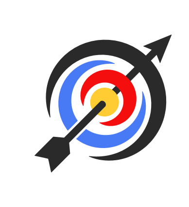

<nav id="navbar"
     class="navbar navbar-expand navbar-dark fixed-top shadow-sm">

  <!-- Burger Toggle -->
  <a id="sidebarCollapseNavBar"
     (click)="toggleNavbar()">
    <fa-icon [icon]="isActive ? 'bars' : 'times'"
             size="2x"></fa-icon>
  </a>

  <!-- Logo (bei aktiver Liga mit QueryParam) -->
  <a id="navbar-brand"
     href="/home"
     (click)="onLogoClick($event)">
    
  </a>

  <!-- Titel: Standard oder Liga-Name -->
  <div class="navbar-title-wrapper">
    <ng-container *ngIf="!currentLiga?.id && !ligaName">
      <a id="navbar-header"
         [routerLink]="['/home']">
        <h1>{{ 'NAVBAR.TITLE' | translate }}</h1>
      </a>
    </ng-container>

    <ng-container *ngIf="currentLiga?.id">
      <h1>{{ ligaName }}</h1>
    </ng-container>

    <ng-container *ngIf="!currentLiga?.id && ligaName">
      <h1>{{ ligaName }}</h1>
    </ng-container>
  </div>

  <!-- Offline-Indikator -->
  <div *ngIf="isOffline()"
       id="navbar-offline">
    <h3>OFFLINE</h3>
  </div>

  <!-- Rechtsbereich -->
  <div id="navbar-right"
       class="nav navbar-nav ml-auto navbar-right">

    <!-- Login -->
    <a *ngIf="(!isLoggedIn || isDefaultUserLoggedIn)"
       class="nav-link"
       [routerLink]="['/user/login']">
      <button class="btn btn-light" data-cy="login-button">Login</button>
    </a>

    <!-- User Dropdown Trigger -->
    <a *ngIf="(isLoggedIn && !isDefaultUserLoggedIn)"
       class="dropdown nav-link dropdown-toggle"
       (click)="toggleUserDropdown()">
      <fa-icon icon="user-circle"
               size="2x"></fa-icon>
    </a>

    <!-- Dropdown -->
    <bla-user-dropdown *ngIf="isUserDropdownVisible"
                       (onAction)="toggleUserDropdown()"></bla-user-dropdown>

  </div>
</nav>
